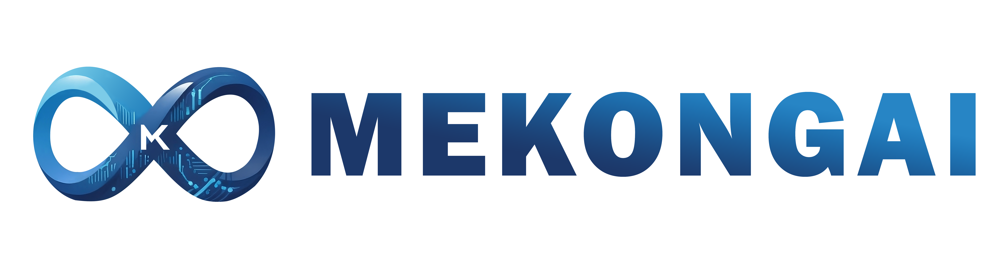
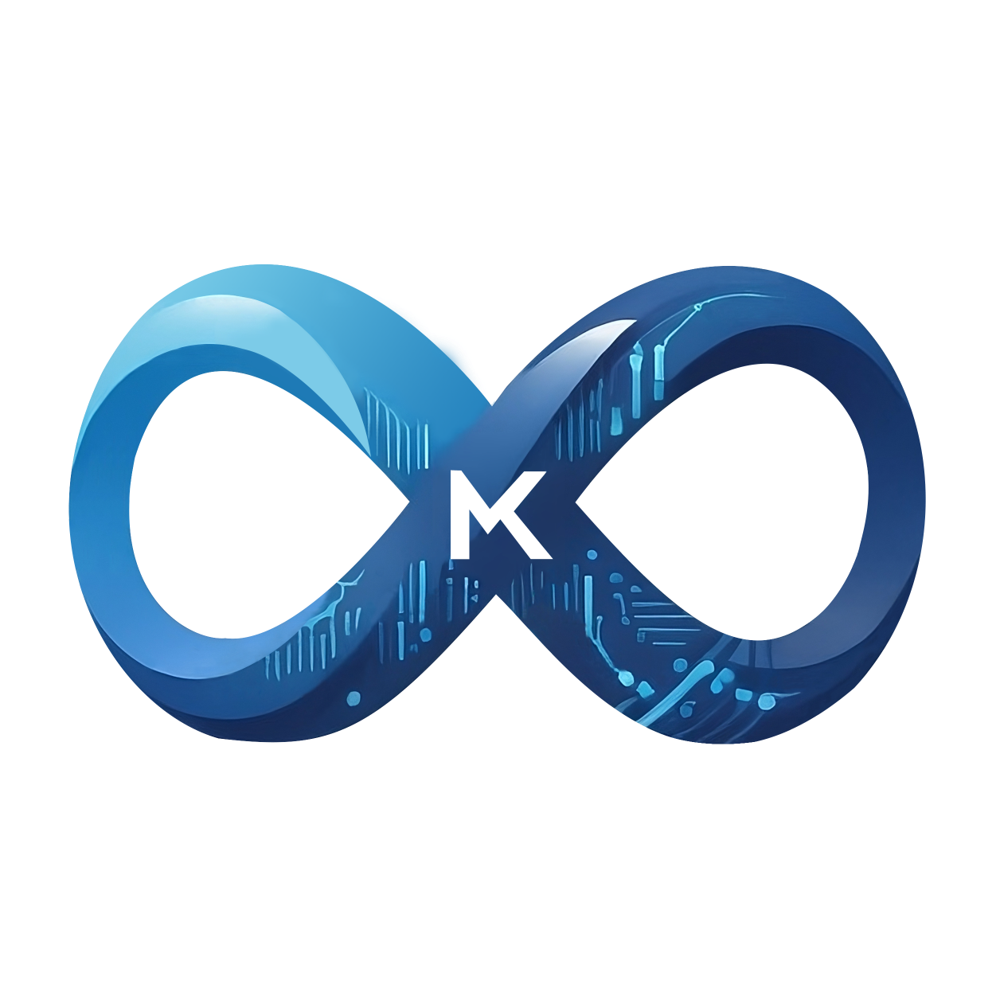

MekongAI Nexus
Nền Tảng Điều Phối Đa Tác Nhân AI - Tự Lập Kế Hoạch, Tự Tranh Luận, Tự Học Hỏi
80,000+ LOC | 172+ Tools | 66 Agents | 13 Security Layers | 9 Channels | Zero-Config Deploy
Vấn Đề & Giải Pháp
Giới Hạn Của AI Agents Hiện Tại
- Single-agent: Claude Code, Cursor, Gemini CLI - chỉ 1 AI suy luận, dễ bỏ sót góc nhìn
- Không memory dài hạn: Mất toàn bộ ngữ cảnh khi hết session
- Không tự học: Cùng task lặp lại vẫn bắt đầu từ 0 mỗi lần
- Vendor lock-in: Hết credit = dừng hoàn toàn, không fallback
- Crash = mất tiến độ: Không checkpoint, không resume
- Tools cố định: Không tự mở rộng capability runtime
Giải Pháp MekongAI Nexus
- 7+ agents tranh luận: Structured debate 2 rounds → output chất lượng cao hơn
- Memory 4 tầng (L0→L3): Tự chưng cất tri thức + Dreaming Engine mỗi 6h
- XSkill Learning: Tự trích xuất workflow từ mỗi task thành công → tái sử dụng
- 8+ providers + FREE fallback: Hết credit? Hệ thống tự chuyển sang LLM miễn phí
- Checkpoint PostgreSQL: Crash → tự resume chính xác tại turn loop đang chạy
- Self-Evolution: Tự sinh Python tools mới từ mô tả ngôn ngữ tự nhiên
Cam kết Zero-Downtime: Nếu không cấu hình API key trả phí, hoặc bị lỗi/hết tiền giữa chừng → hệ thống tự động chuyển sang chuỗi LLM miễn phí (Kilo → Pollinations → g4f). Task KHÔNG BAO GIỜ bị dừng giữa chừng. Chất lượng output có thể thấp hơn so với model trả phí, nhưng task luôn hoàn thành.
Kiến Trúc Hệ Thống - 5 Tầng
Harness Engineering - Kiến Trúc Điều Khiển AI
Framework CAR (Control-Agency-Runtime) - định hình môi trường xung quanh AI agents để chúng hoạt động đáng tin cậy, thay vì hy vọng chúng tự biết phải làm gì
Control Layer (Kiểm soát)
System prompt modular - 10 sections lắp ráp theo thứ tự cố định, tối đa hóa Anthropic prompt cache hit rate (~75% giảm chi phí).
Production Excellence - Mỗi agent bắt buộc tuân theo tiêu chuẩn: Web apps phải dùng framework thực (React/FastAPI), Security audit cần 10 tiêu chí CVE-specific.
Agency Layer (Tự chủ)
GoalEngine - Phân rã mục tiêu thành sub-goals với dependency tracking.
SelfReflection - Checkpoint chất lượng mỗi 3 tool rounds, ngưỡng theo domain (security: 0.80).
MetacognitiveAgent - Khi bị stuck, phân tích root cause qua 6 câu hỏi: WHAT → WHY → ASSUMPTION → NEEDED → DIFFERENT FRAME → ASK USER?
Runtime Layer (Thực thi)
Pipeline thống nhất - MỌI request đi qua cùng 1 engine, đảm bảo nhất quán.
Checkpoint - Lưu PostgreSQL mỗi turn, tối đa 3/task. Server crash → restart → tự resume.
Exponential backoff - Khi TẤT CẢ providers fail: 30s → 60s → 120s (cap 5 phút), không crash mà chờ phục hồi.
Tham khảo: Anthropic (effective harnesses), OpenAI (Codex agent-first), LangChain (separation of concerns), Manus.im (KV-cache locality), HumanLayer (12 Factor Agents)
Technology Stack
Backend
Python 3.12+ / FastAPI / SQLAlchemy 2.0
80,000+ LOC | 300+ modules
Frontend
React 19 / TypeScript 5.7 / Vite 6 / Zustand 5
160+ components | 22 hooks
Database
PostgreSQL 16 + pgvector + FTS
25+ tables | 18 migrations
Cache & Messaging
Redis 7+ (Pub/Sub + Response Cache)
Message Bus | Leader Election
LLM
LiteLLM + AsyncOpenAI SDK
8+ providers | Any OpenAI-compatible
Deployment
Docker Compose (5 services)
1 lệnh deploy | No GPU needed
Demo: Chat Interface
Giao diện chat 3-panel chuyên nghiệp:
- Navigation bar với tabs điều hướng + model indicator
- Sidebar quản lý sessions + search full-text
- Panel chat: SSE streaming, Markdown tables, code highlighting
- Panel Process: Agent reasoning + tool execution real-time
docker compose up -d --build
# Access: http://localhost:8899
# API: http://localhost:8899/api/docs

Demo: Agent Management

Trang Agents - master-detail layout:
- 66 agent templates sẵn có (8 lĩnh vực)
- Chi tiết: Description, Personality, Thinking Style
- Skills badges + Tools list (role-based access)
- Chat trực tiếp với agent + Spawn mới
- Logs + History cho audit trail
Demo: Multi-Agent Execution
Process panel - theo dõi execution real-time:
- 7 agents hoạt động đồng thời với status badges
- Discussion cards: Challenge → Rebuttal → Synthesis
- Self-Reflection cards (color-coded quality)
- Tool execution logs với Docker/nmap/Python output
- Evolution Agent suggestions inline
Think (temp 0.4) → Discuss (2 rounds)
→ Execute (unlimited tool rounds)
→ Self-Reflect → Continue/Complete

Demo: Knowledge Graph & Continual Learning


Orchestration Pipeline - 8 Phases
NexusExecutionPipeline - điểm vào DUY NHẤT cho TẤT CẢ requests. Mỗi task đi qua pipeline hoàn chỉnh, không shortcut.
Fetch SONG SONG từ 7 nguồn (memory, KG, RAG, XSkill, history) timeout 3s/nguồn. Chấm điểm: keyword_overlap×0.4 + source_priority×0.4 + length×0.2. Budget 8-12KB.
Phân tích complexity → chọn agents từ 66 templates. Simple: 1 agent, 1 turn. Complex: 3-7 agents. Expert: unlimited turns + DivergentThinker (3 frames song song, temp 1.0).
Agents suy luận song song (temp 0.4, 2048 tokens). Rồi tranh luận 2 rounds: Challenge+Support → Rebuttal → Synthesis (agreed_approaches + key_insights).
Vòng tool KHÔNG GIỚI HẠN. Output capped 20KB cho LLM, full lưu ACTIVITY.md. Context sharing: peers thấy 5KB kết quả. Activity-based timeout, không artificial limits.
Progress < 80% = NEVER complete. Delta > 5% = ALWAYS continue. Evolution severity ≥ 0.8 = MUST continue. Stagnation < 3% → MetacognitiveAgent override.
FINAL_REPORT.md (multi-pass, chunked 30KB). Background: Memory pipeline L0→L3 + XSkill + GraphRAG auto-index. Fire-and-forget, không block user.
Context Engineering - Quản lý "bộ nhớ làm việc" của AI
Khác với các hệ thống chỉ dump text vào prompt, Nexus quản lý context như ngân sách - chấm điểm, phân bổ, nén thông minh.
Modular Prompt Assembly
System prompt được lắp ráp từ 10 sections theo thứ tự CỐ ĐỊNH. Sections tĩnh đặt trước, sections động đặt CUỐI CÙNG - tối đa hóa Anthropic prompt cache hit rate (~75% giảm chi phí token).
Epoch Compression
Mỗi 10 turns, nén lịch sử thành structured summary. Cho phép task chạy 100+ turns mà KHÔNG mất context. Claude Code/Cursor bị giới hạn bởi context window cứng - Nexus vượt qua giới hạn này.
Budget Allocation Algorithm
XSkill workflows: 90 (proven, tái sử dụng)
Previous task context: 85 (session continuity)
Active recall (user prefs): 70
Knowledge Graph: 60
Memory layers (L1/L2/L3): 50
Agent memory files: 40
Effective score = priority×0.6 + relevance×0.4
Proportional budget distribution. Smart truncation tại ranh giới câu.
Self-Bootstrap Doctrine
Agent KHÔNG BAO GIỜ nói "không thể" - thiếu Node.js → cài đặt. Thiếu Docker → cài đặt. Thiếu tool → scaffold_custom_tool_module(). Thiếu cloud → hỏi user. Luôn chọn approach hiện đại nhất.
Structured Discussion - Tại Sao Multi-Agent > Single-Agent
Claude Code, Cursor, Gemini CLI = 1 AI suy luận đơn lẻ. Nexus = 7+ AI chuyên biệt tranh luận lẫn nhau → phát hiện blind spots, loại bỏ giả định sai.
Round 1: Challenge
Mỗi agent đọc thinking của đồng nghiệp → xác định:
Điểm yếu (giả định sai, thiếu cân nhắc)
Điểm mạnh (cần bảo toàn)
Ví dụ: "Agent A nói port 9000 an toàn, nhưng tôi thấy MinIO đang chạy trên port đó - cần kiểm tra bucket access"
Round 2: Rebuttal
Agent bị challenge phải:
Bảo vệ quan điểm với evidence bổ sung
HOẶC chấp nhận sai và điều chỉnh
Không cho phép "agree to disagree" - mỗi challenge đều phải có resolution cụ thể
Synthesis
Auto-generated output:
agreed_approaches: Chiến lược đồng thuận
unresolved_disagreements: Cần nghiên cứu thêm
key_insights: Phát hiện MỚI chỉ xuất hiện nhờ debate
Kết quả thực tế: Trong Case Study CVE-2026-23918, ban đầu CVSS được đánh giá 8.8 - nhưng sau debate, Forensics Analyst challenge rằng crash rate 100% + deterministic (không phải race condition) → team đồng thuận nâng lên 9.8 CRITICAL. Phát hiện này chỉ có được nhờ adversarial discussion.
66 Agent Templates - 8 Lĩnh Vực
Researcher, Developer, Analyst, Writer, Coordinator, Judge, Critic, Architect, Debugger, Orchestrator, Assistant, Security Reviewer
Pentester, Recon Specialist, Exploit Developer, DevOps, Vulnerability Researcher
Frontend/Backend Developer, DB Engineer, Data Scientist, UX Designer, PM, QA Engineer
Quant Trader, Macro Economist, Legal Advisor, Business Strategist, Accountant
OSINT, Threat Hunter, Forensics, Counter-Intel, SIGINT, FININT, Cyber Warfare, Social Eng, Dark Web, Malware, Crypto...
Multimodal Creator, Linguist, Historian, Physicist, Medical Researcher, Chef, Educator, Hypothesis Generator...
Mỗi template bao gồm: personality thinking_style domain knowledge 300-1000 từ skills dict specific tools methodology framework
Memory System (L0→L3) - Vượt xa "session memory"
Claude Code chỉ có CLAUDE.md (file tĩnh). Cursor có context files. Nexus tự CHƯNG CẤT knowledge qua 4 tầng, lấy cảm hứng từ cách não người củng cố trí nhớ qua giấc ngủ.
Hồ sơ toàn diện user/agent, versioned (3 backups). Kích hoạt mỗi 50 atoms mới. Tạo persona Markdown có cấu trúc - hệ thống "biết" user là ai và thích gì.
Gom atoms → theme blocks (max 15 scenes hoạt động). Chấm điểm recall đa từ khóa. Delay 90s sau L1 để atoms ổn định trước khi gom nhóm.
4 types: PERSONA, EPISODIC, INSTRUCTION, FACTUAL. Importance score 0.0-1.0. Embedding vector cho semantic search. Dedup tại ngưỡng 0.85 (tránh lưu lặp).
Đếm messages per session. Warmup thresholds (1→2→4→N). Raw event stream đến các tầng trên. Kích hoạt L1 mỗi 5 turns.
Dreaming Engine
Chu kỳ 6 giờ:
Light Sleep → Deep Sleep → REM Sleep
Active Recall
Pre-reply search, multi-source parallel (vector + FTS + graph + file)
Recall Strategy
Hybrid: keyword_overlap × 0.4 + source_priority × 0.4 + length × 0.2
XSkill Continual Learning
Hệ thống tự cải thiện - học từ mỗi task execution thành công
Trích xuất workflows tái sử dụng cấp task - phased execution plans
Bài học chiến thuật cấp hành động - what worked, what didn't
Nén execution logs → SFT training data - lossless compression
Priority Score 90 - cao nhất trong context budget allocation. Skills được inject trước mọi nguồn khác.
172+ MCP Tools - 57 Modules
22 tools
24 tools
18 tools
17 tools
15 tools
14 tools
19 tools
12 tools
Self-Evolution - Tự Tạo Tools Không Giới Hạn
scaffold_custom_tool_module() - Sinh Python implementation từ mô tả ngôn ngữ tự nhiên → validate → register → sử dụng ngay lập tức
create_workflow_tool() - Multi-step workflow thành single tool (chains existing tools + Docker commands)
LLM Provider Layer - Không Bao Giờ Chết
Nếu không cấu hình API key, hoặc hết tiền giữa chừng → tự chuyển sang LLM miễn phí. Task luôn hoàn thành.
Claude Opus/Sonnet
Chất lượng cao nhất
900s timeout
GPT-4o, GPT-4.1
60-120s timeout
Gemini 2.5 Flash
Free tier available
100+ models
Nhiều model miễn phí
200 req/hr/IP
Không cần auth
Nemotron, Poolside
Unlimited requests
Không cần auth
GPT-4o, Mistral, Qwen
Anonymous multi-provider
GPT-4, Claude proxy
Backup cuối cùng
Qwen, Llama
Self-hosted
Hoàn toàn offline
Phát hiện provider lỗi (5 fails/30s) → tự cách ly → thử phục hồi sau 60s. Chỉ lỗi hạ tầng mới trip (timeout, 500, 429) - lỗi logic không ảnh hưởng.
Core → Agent → Kilo → Pollinations → g4f. Tự flatten tool messages khi chuyển provider family. Credential pool rotation round-robin.
Tin nhắn ngắn (≤160 chars, 1 dòng, không code) → model rẻ. Mọi thứ khác → model mạnh. Nếu không chắc → giữ primary.
⚡ Lưu ý về chất lượng: LLM miễn phí (Kilo, Pollinations, g4f) có chất lượng suy luận thấp hơn so với Claude Opus hay GPT-4o. Chúng đảm bảo task không bị gián đoạn, nhưng output có thể ít chi tiết hoặc kém chính xác hơn. Khuyến nghị cấu hình ít nhất 1 API key trả phí cho các task quan trọng.
Security Architecture - 13 Layers
Defense-in-Depth - Mô hình phòng thủ theo chiều sâu
Cognitive Upgrade - 3 Tầng Trí Tuệ
Layer 1: Self-Awareness
InfrastructureMap - Agents biết CHÍNH XÁC capabilities tại mọi thời điểm
LLM status, Cloud providers, Toolset health, Execution tier, Self-Bootstrap options
KHÔNG BAO GIỜ nói "không thể" - bootstrap trước!
Layer 2: Metacognition
MetacognitiveAgent - Phân tích TẠI SAO stuck
6-Point Framework:
WHAT → WHY → ASSUMPTION → NEEDED → DIFFERENT FRAME → ASK USER?
Không lặp lại sai lầm
Layer 3: Divergence
DivergentThinker - 3 cách tiếp cận song song
Frames (temp 1.0):
Production Excellence
Unconventional
Reverse Engineering
Chọn best, không đi shortcut
Multi-Channel - 9 Nền Tảng
Một hệ thống - mọi kênh giao tiếp
🌐
Web UIFull-featured, 20 routes, SSE streaming
✈️
TelegramRich messages, inline keyboards
💬
DiscordSlash commands, embeds
📱
SlackBlock Kit, Socket Mode
📞
WhatsAppBaileys / Cloud API
📧
EmailIMAP + SMTP, threads
📝
SMSTwilio API
🔒
SignalE2E encrypted
🔗
MatrixDecentralized, E2EE
Case Study: Penetration Testing
Kết Quả:
- 5 loại vulnerability discovered
- Default credentials: admin:123qwe → Full Admin JWT
- 59 user accounts leaked (unauthenticated API)
- 120+ configuration files extracted (MinIO)
- 7 Python exploit scripts ready-to-run
- 8 comprehensive reports (OWASP methodology)
Adaptive: Khi bị block IP → tự pivot sang document exploitation paths và viết workbook cho clean IP execution
Case Study: CVE-2026-23918 Research
Kết Quả:
- CVSS 9.8 CRITICAL - confirmed
- 100% crash rate (32/32 attempts)
- Root cause: duplicate entry m→spurge array
- 3 exploit vectors developed
- Detection tool h2ghost.py - standalone
- Docker ASAN lab TỰ ĐỘNG xây dựng
Deterministic - NOT race condition. Từ zero → confirmed vulnerability trong 1 session tự động hoàn toàn.
So Sánh Với Top-Tier AI Agents
10 Điểm Khác Biệt Độc Nhất
Agents TRANH LUẬN qua 2 rounds (Challenge→Rebuttal→Synthesis) - không chỉ consensus
Tự CHƯNG CẤT qua L0→L3 + Dreaming Engine consolidation mỗi 6 giờ
KHÔNG BAO GIỜ chết - Free chain (Kilo→Pollinations→g4f) + Circuit Breaker
Tự TẠO tools, cài dependencies, scaffold Docker containers tại runtime
Không giới hạn turns - chạy đến 80%+ quality. Evolution Agent chặn khi severity≥0.8
14 SSE event types hiển thị real-time. ACTIVITY.md unlimited fidelity
6-point framework phân tích ROOT CAUSE khi stuck - không lặp lại lỗi
Context engineering + architectural constraints + entropy management
Bất kỳ OpenAI-compatible endpoint. 8+ providers, credential pool, smart routing
13 lớp defense-in-depth - CommandGuard đến Approval Workflow
Ứng Dụng Đa Lĩnh Vực
Cybersecurity
Penetration Testing, Vulnerability Research, Red Team, Security Audit, Bug Bounty, Incident Response
Software Development
Code Generation, Code Review, Bug Fixing, Refactoring, Testing, Documentation, Full Project Scaffolding
Research & Analysis
Deep Research, Data Analysis, Competitive Analysis, Due Diligence, Patent Research
Enterprise Ops
IT Automation, Content Creation, Customer Support, Process Automation, Monitoring
Education
Personalized Tutoring, Lab Environments, Assessment, Course Material, Simulation
Any Complex Task
Bất kỳ bài toán nào cần multi-perspective AI, collaborative problem-solving, và iterative quality
Frontend Architecture - React 19 + TypeScript 5.7
20 Routes - Full SPA
14 SSE Event Types (Real-time)
Toàn bộ quá trình AI hiển thị live:
~160 TSX Components
Chat (29) | Process cards (20) | Viewers (12) | Dashboard (4) | Project builder (5) | Admin (4)
Performance Optimizations
Code splitting | Virtual scrolling | LRU cache (30s) | Skeleton loading | Lazy pagination
Demo: Skills Hub & Workspace Artifacts

Skills Hub - 39 built-in skills, grid cards

Workspace Artifacts - file tree + rendered viewer
Workspace & Artifacts
Mỗi task có workspace riêng biệt - file tree + rendered viewer
workspace_data/tasks/{task_id}/
├── _context/
│ ├── TASK_BRIEF.md # Mission statement
│ ├── ROE.md # Rules of Engagement
│ ├── TODO.md # Living progress tracker
│ ├── ACTIVITY.md # Full execution log
│ ├── DECISIONS.md # Strategic decisions
│ ├── FINAL_REPORT.md # Comprehensive report
│ └── LEDGER.jsonl # Event ledger
└── _work/ # Agent work products
9 Artifact Viewers
Auto-Generated Artifacts
- Reports: Markdown, structured findings
- Code: Python scripts, PoC exploits, tools
- Data: JSON, CSV, JSONL outputs
- Evidence: Screenshots, logs, crash dumps
- Configs: Docker, YAML, JSON
RAG Pipeline & Knowledge Graph
Hybrid retrieval: Vector + Full-Text Search + GraphRAG with auto-ontology
Vector Search
pgvector semantic similarity
Sentence-Transformers / OpenAI / Bedrock Titan / Qwen3-Embedding
Free fallback: Qwen3-Embedding-0.6B
Full-Text Search
PostgreSQL tsvector
Keyword matching
Multi-language support
Auto-index on document upload
GraphRAG
12 entity types (color-coded)
Labeled edges (caused_by, uses, affects...)
Multi-hop reasoning (A→B→C)
Auto-ontology generation
Deployment - 1 Lệnh Duy Nhất
git clone <repo-url> mekongai-nexus && cd mekongai-nexus
# 2. Configure (hoặc để trống cho free tier)
cp .env.example .env
# 3. Build & Run - 1 lệnh duy nhất
docker compose up -d --build
# 4. Access
# Web UI: http://localhost:8899
# API Docs: http://localhost:8899/api/docs
# OpenAI-compatible: http://localhost:8899/v1/chat/completions
RAM tối thiểu
CPU tối thiểu
GPU required
:8899
:18800
:5433
:6380
:18789
Không cần API key: Hệ thống sử dụng free LLM providers (Kilo, Pollinations, g4f) + Qwen3-Embedding miễn phí + DuckDuckGo search miễn phí. Toàn bộ pipeline hoạt động đầy đủ chức năng - chất lượng suy luận thấp hơn model trả phí nhưng KHÔNG thiếu feature nào. Cấu hình API key (Bedrock/OpenAI/Gemini) để nâng chất lượng output lên mức tốt nhất.
Project Builder & Analytics
Project Builder Pipeline
- AI tạo project architecture từ requirements
- Template library cho common project types
- Iterative refinement (sửa lỗi, thêm tính năng)
- Dev server auto-start/stop + preview
- Error pattern detection and auto-fix
Analytics & Monitoring
Real-time consumption, cost breakdown per provider/model
Provider monitoring, circuit breaker status, queue depth
Completion rates, agent performance, quality trends
Alerts, limits, hourly/daily patterns, top sessions by cost
Resilience & Observability
Hệ thống được thiết kế để KHÔNG BAO GIỜ mất dữ liệu - mọi hành động được ghi lại, mọi crash được phục hồi.
Crash Recovery & Self-Healing
Observability Stack
API & Integration - Drop-in OpenAI Replacement
Nexus expose endpoint /v1/chat/completions - bất kỳ client dùng OpenAI SDK đều có thể dùng Nexus thay thế mà không đổi code.
Chat & Streaming
POST /api/v1/chat/stream - SSE
POST /api/v1/chat/ - Sync
GET /api/v1/chat/models
GET /api/v1/chat/profiles
Sessions & Tasks
GET /api/v1/sessions
GET /api/v1/sessions/search?q=
GET /api/v1/tasks/{id}/events
POST /api/v1/tasks/{id}/cancel
System
GET /api/v1/doctor - Health
GET /api/v1/analytics
GET /system/background-metrics
POST /v1/chat/completions
Database (18 Migrations, PostgreSQL 16)
Core: agents, tasks, messages, tools | Memory: atoms, scenes, personas | Knowledge: nodes, edges, chunks | Learning: skills, experiences | Security: API keys, audit
Concurrency & Scaling
Uvicorn workers auto-detect CPU cores | Redis sliding-window rate limit (60×cores RPM) | LLM semaphore (5 parallel) | MAX_PARALLEL_AGENTS=5/turn | 1h safety timeout
Lộ Trình Phát Triển
3-6 Tháng
- Voice Interface real-time
- Visual QA Automation
- Skill Marketplace (community)
- Multi-Tenant isolation
- Speculative execution (2-3× throughput)
6-12 Tháng
- Autonomous Research Programs
- Cross-Instance Federated Learning
- Real-Time Collaboration
- Mobile App (iOS/Android)
- Plugin Ecosystem marketplace
Tầm Nhìn Dài Hạn
- Enterprise AI Operating System
- Distributed Multi-Instance
- Hardware Integration (IoT)
- Self-Improving Architecture
- SSO/SAML/RBAC/SOC2/GDPR
Thống Kê Kỹ Thuật

MekongAI Nexus
Multi-Agent Orchestration Platform
with Layered Memory, Structured Debate & Continual Learning
MekongAI | Version 1.1.0 | June 2026